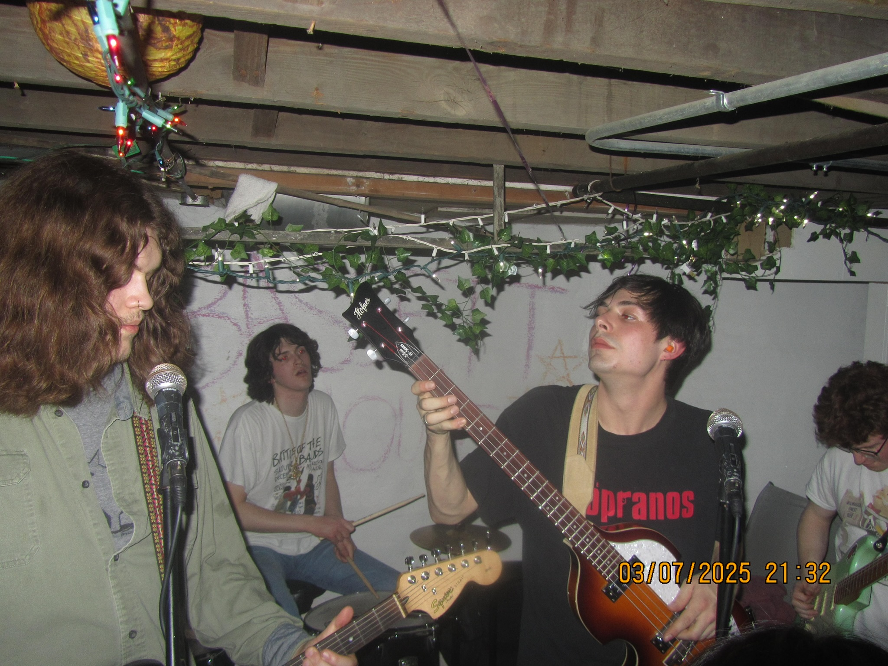
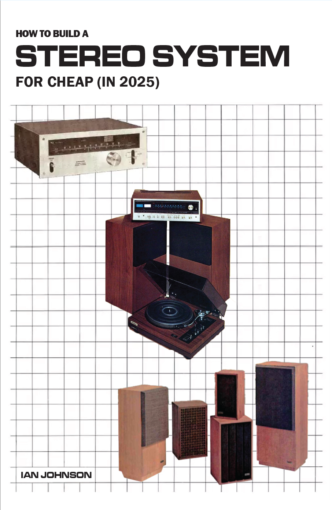

Welcome to Lydell Culture, The Media Portfolio of Ian Johnson

My college band the Commonwealth

A flyer I made for Wisconsin Music Business club

The cover of a pamplet I designed
About Me
Hi, I'm Ian Johnson, and I'm a Marketing graduate of the Wisconsin School of Business with minors in Digital Studies and Graphic Design. Currently, I'm enrolled at MATC in the Front End Web Developer Trade Diploma. I have proven expertise in creative visual, audio, and written content creation completed by a strong foundation in traditional and digital marketing methods. My passion lies in the intersection of arts and business, creating innovative solutions based on proven results.